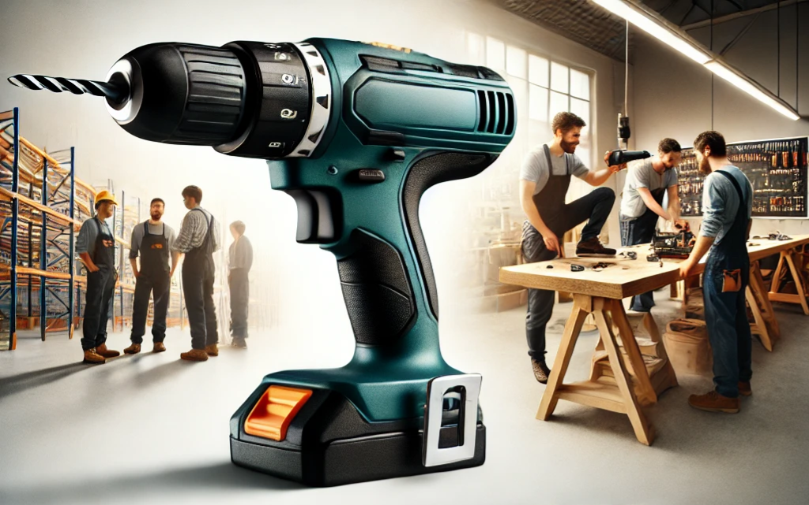
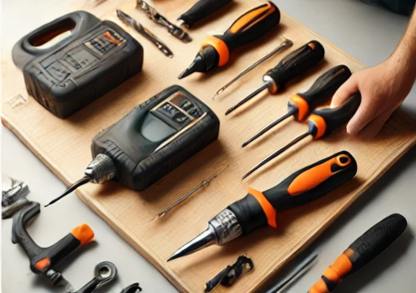
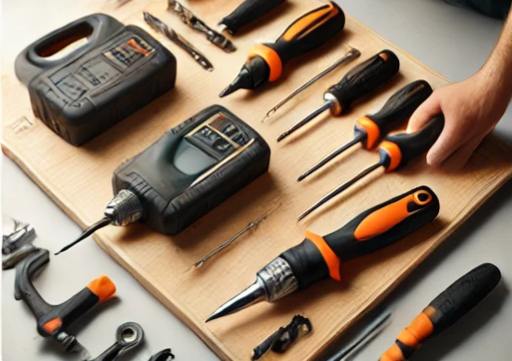
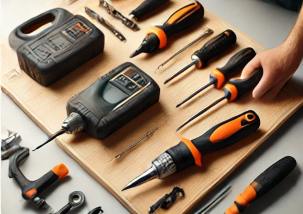

PowerPro Tools Media
Podcast: How to Use a Drill, Beginner's Guide
Listen to this beginner's guide podcast to learn how to use a drill effectively, including safety tips and practical advice for first-time users.
Video: Cordless Drill vs. Impact Driver
This video compares the functionality, efficiency, and key differences between a cordless drill and an impact driver. Learn which tool suits your needs the best!
Media Highlights
Explore photos and videos from our recent projects and events.

 

